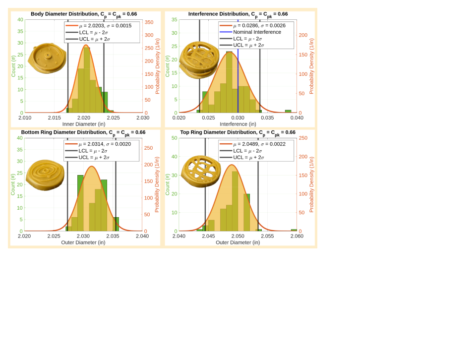
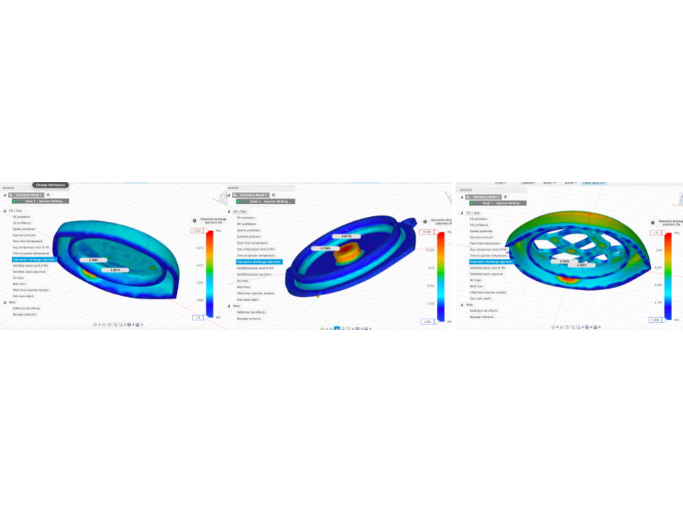

Challenge
Take a yo-yo from a product concept to an actual injection-molded part, where geometry, tooling, shrinkage, and finish all decide whether the final piece looks like the render or looks like a mistake.
MIT 2.008 - Manufacturing
A physical product and manufacturing project connecting product design, design for manufacturing, mold and tooling considerations, injection molding, process planning, and final product quality.

Take a yo-yo from a product concept to an actual injection-molded part, where geometry, tooling, shrinkage, and finish all decide whether the final piece looks like the render or looks like a mistake.
This was as much a DFM project as a product design one. The finished part and the shrinkage/manufacturing documentation below are what came out of iterating on both at the same time.


The material choice, mold strategy, and tolerance tradeoffs deserve their own writeup, and I haven't pulled that together from the team documentation yet. It's on the list.
The manufacturing spec and shrinkage analysis below are the real process artifacts from the build, not mockups.
I still want to add the specific quality checks and defect observations that drove revisions between runs. Ask me and I can walk through it directly.
Delivered a production-quality physical yo-yo through an injection molding workflow.
I'll add what changed for a second run once I've gone back through the team report.